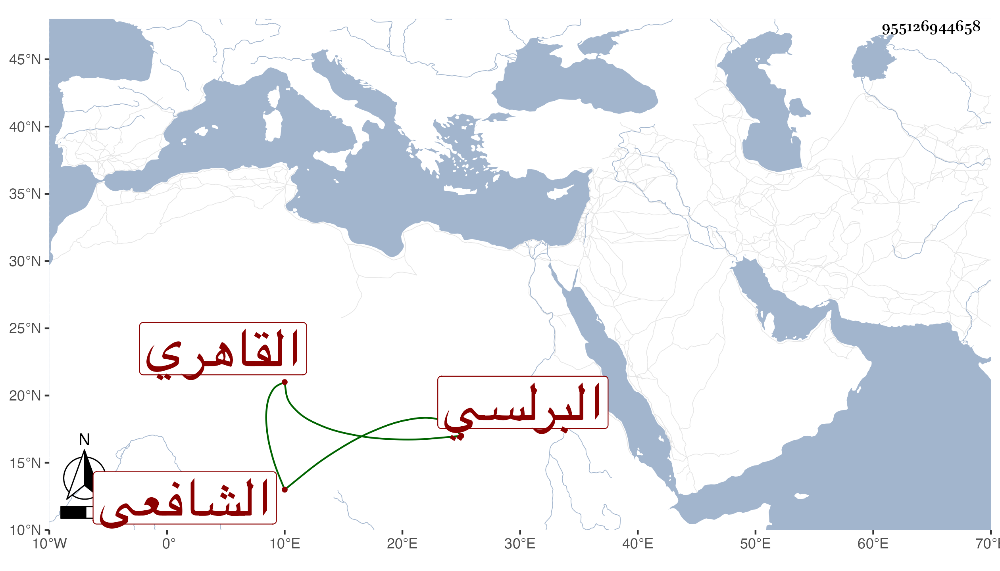

0902Sakhawi.DawLamic.ITO20230111-ara1.EIS1600.955126944658
Biography ID: 955126944658
246
عبد الله بن محمد الجمال البرلسي ثم القاهري الشافعي . اشتغل قليلا وكان يتعانى زي الصوفية ويصحب الفقراء ثم دخل مع الفقهاء وناب في الحكم قليلا وكذا في بعض البلاد ثم منع لكائنة جرت له لأن الشافعي لما منعه ناب عن الحنفي فعين عليه قضية تتعلق بكنيسة اليهود فحكم فيها بحكم يتضمن نقض حكم سابق لقاضي الحنابلة العلاء بن المغلى فأنكر عليه وقوبل على ذلك وصرف عن النيابة حتى مات في رجب سنة خمس وأربعين وهو ظنا في عشر التسعين بتقديم المثناة .
